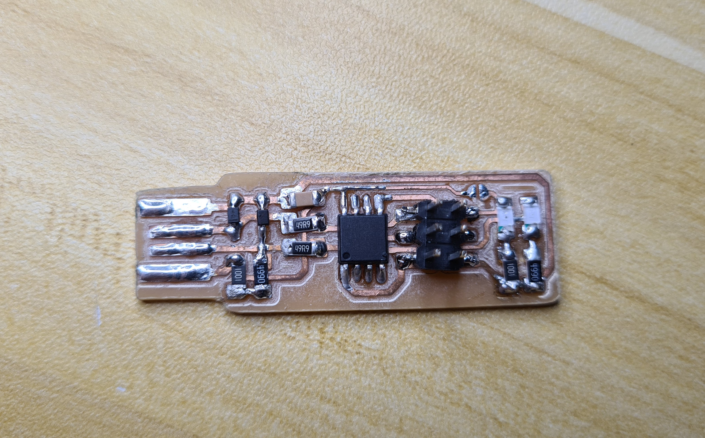
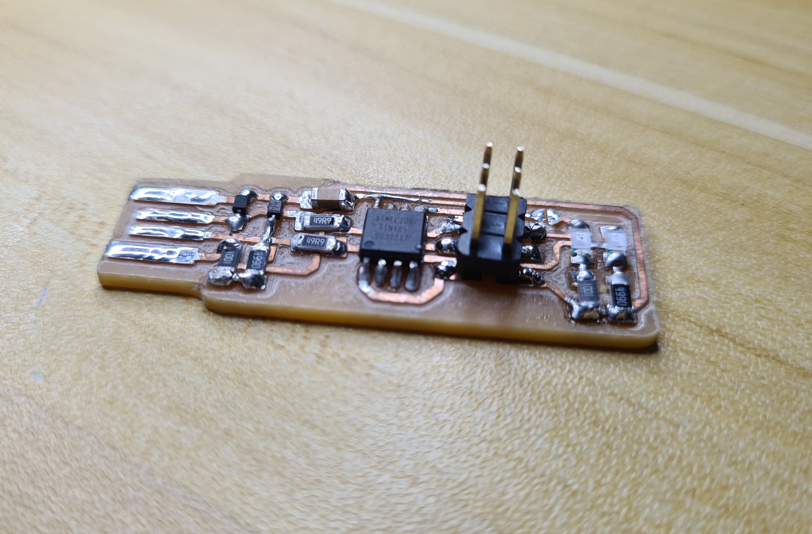

Electronics Production
Introduction
This week, we learnt how to produce custom PCB through milling using a CNC machine.
Skills such as:
- Generating G-code using a PNG image
- Milling the PCB
- Stuffing (populating) the PCB
- Soldering SMDs
were acquired.
Generating G-code using a PNG file.
As we havent learnt electronics design yet, I used the ISP PCB design provided by our lecturer. One thing to take note of is that the white regions are the areas we want to keep, and that the program will mill in the black regions. 2 PNG files were needed, the trace, which is milled to just the thickness of the copper, and the outline, which will be milled all the way through.


Once the PNGs were aquired, the G-code was generated using a program on a site provided by the lecturer called mods. To access the program on the site, rightclick -> programs -> open server program -> (Under G-code) mill 2D PCB PNG. A series of boxes with various parameters should open up as seen in the image below.
The machine we were using to mill the PCBs was the Stepcraft 420. Below were the recommended settings for the Stepcraft.
| Operation | Endmill Size | Cut Speed | Cut Depth | Total Depth | Offset |
|---|---|---|---|---|---|
| Traces | 0.1 mm 30 deg V-bit | 50~60mm/min | 0.04 ~ 0.05 mm | 0.04 ~ 0.05 mm | 1-2 |
| Board Outline | 0.8 mm flat | 50~60 mm/min | 0.42-0.45 mm | 1.65 ~ 1.70 mm | 1 |
To use the program:
- In the first node and select the PNG file to generate G-code with.
- In the second node and input the settings for both traces and outline. To switch between the 2 settings, click the option needed.
- In the third node, click calculate. The G-code file has been generated and should automatically download. If download doesnt start, check if there is any popup blockers in the browser present.
- Optionally, the toolpath can be viewed in 3D. Generally, it is good practice to ensure and check that the G-code is generated as intended.
To generate my G-code, I mainly used the recommended settings, save for increasing the number of trace offsets to 4. As this was my first time soldering small components like the SMDs, I wanted to reduce the chances of shorting connections by making the distance between traces larger. This resulted in longer mill times but as a precaution I think it was worth the extra time.
Milling the PCB
After the G-code was generated, we were taught how to use the machine and afterwards, were free to mill the PCB.
On my first attempt at milling, my board was less than ideal. Instead of the bit cutting the copper, it was more like tearing the copper away. I suspect this was due to a dull or broken bit. The edges were mangled and some of the traces even lifted off the board. Even after sanding, I was not confident in the connections across the board and decided to give milling another try.
After a new sharper bit and 1 more hour, I got a PCB that I was confident in continuing with. After deburring and removing dead copper, the PCB looks like the board below, with clean edges and well defined traces, a large step up from my first attempt. Forgive me I did not take a picture of my own board as I was too overzealous in continuing onto stuffing the board.
Stuffing the board
Parts were obtained for the PCB according to this schematic.

The list of components include:
- ATtiny85 x 1
- 1kΩ resistor x 2
- 499Ω resistor x 2
- 49Ω resistor x2
- 3.3v zener diode x2
- Red LED x 1
- Green LED x 1
- 100nF capacitor x 1
- 2x3 pin ISP header x 1
and the components were soldered on the PCB according to this other schematic.

I had very little regular soldering experience before this, let alone SMD soldering. As a result, stuffing the board was a very difficult process, but it was fun to learn a new skill. I think it could have gone better if I used a sharp soldering bit, because at the time I was still using the standard fat bit, but overall I think that the soldering isnt that bad. There is still a lot to be improved on though, such as reducing the amound of solder used.
After stuffing the board, this was what I ended up with.
 
Not the best, but serviceable. Now that I learnt how to make a PCB, next week it is time to learn how to design one from scratch.